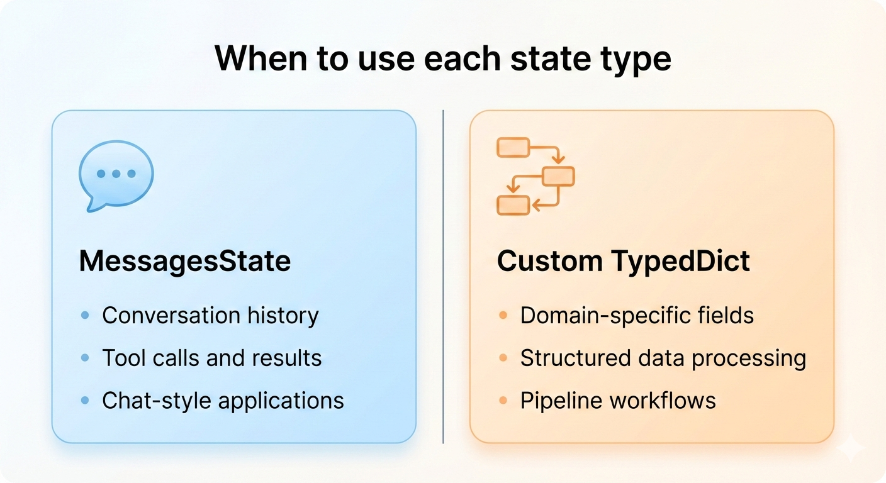
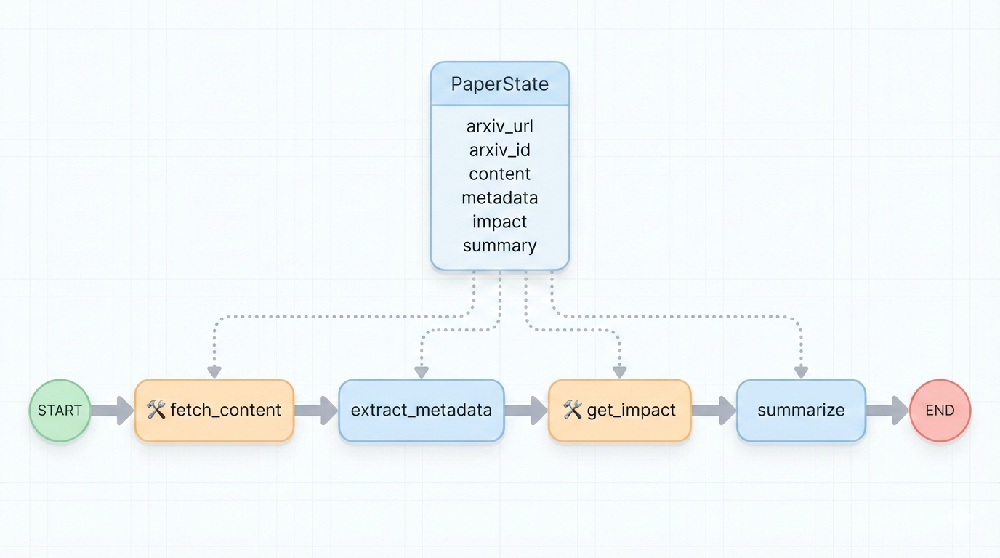
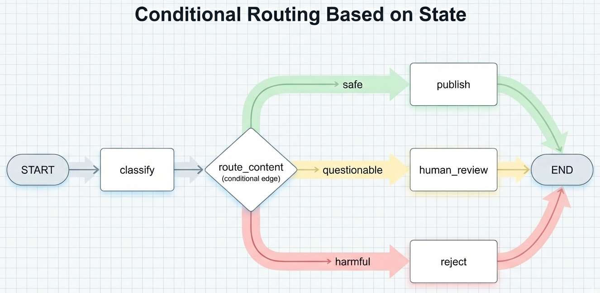
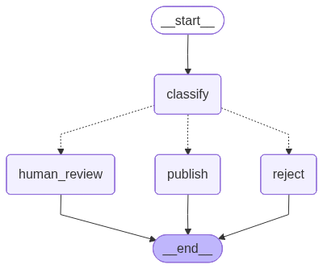
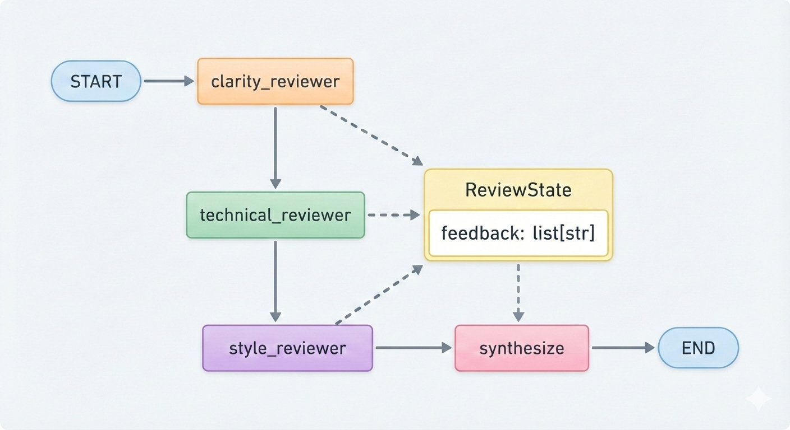

2026-02-27
TypedDict states for non-conversational workflowsIn decks 05-07, we used MessagesState for conversational apps:
MessagesState is a TypedDict with one field: messages (a list that accumulates).
Pattern: user message → [tool calls if needed] → AI response
Consider an arXiv paper analyzer:
No chat history needed—just data flowing through processing stages.

Choose the state structure that matches your data flow.
Goal: Given an arXiv link, fetch the paper, look up its publication info, and generate a summary with impact metrics.
from typing_extensions import TypedDict
class PaperState(TypedDict):
arxiv_url: str # Input: arXiv link
arxiv_id: str | None # Extracted ID (e.g., "1706.03762")
content: str | None # Paper text
metadata: dict | None # title, authors, contributions
impact: dict | None # citations, venue, published DOI
summary: str | None # Final outputEach field serves a specific purpose in the pipeline.

Four nodes: fetch (tool), extract, look up impact (tool), summarize.
import requests
import fitz # PyMuPDF
from langchain.tools import tool
@tool
def fetch_arxiv_paper(arxiv_id: str) -> str:
"""Fetch an arXiv paper by its ID (e.g., '1706.03762') and extract text."""
pdf_url = f"https://arxiv.org/pdf/{arxiv_id}.pdf"
response = requests.get(pdf_url)
if response.status_code != 200:
return f"Error: HTTP {response.status_code}"
# Load PDF and extract text
doc = fitz.open(stream=response.content, filetype="pdf")
text = "\n".join(page.get_text(sort=True) for page in doc)
doc.close()
return textUses PyMuPDF (pip install pymupdf) to extract text. Note: equations/complex layouts may not extract cleanly.
from langchain_google_genai import ChatGoogleGenerativeAI
from langchain.messages import HumanMessage, ToolMessage
import json
llm = ChatGoogleGenerativeAI(model="gemini-2.5-flash", temperature=0.1)
def fetch_content(state: PaperState) -> dict:
"""Let LLM parse URL and fetch paper content."""
llm_with_tools = llm.bind_tools([fetch_arxiv_paper])
messages = [HumanMessage(
content=f"Extract the arXiv ID from this URL and fetch the paper: {state['arxiv_url']}"
)]
for attempt in range(3): # Max 3 attempts
response = llm_with_tools.invoke(messages)
if not response.tool_calls:
raise ValueError("LLM did not call the fetch tool")
tool_call = response.tool_calls[0]
arxiv_id = tool_call["args"]["arxiv_id"]
try:
result = fetch_arxiv_paper.invoke({"arxiv_id": arxiv_id})
except Exception as e:
result = f"Error: {e}"
if result and not result.startswith("Error:"):
return {"arxiv_id": arxiv_id, "content": result}
# Tool failed—let LLM see error and retry
messages.append(response)
messages.append(ToolMessage(content=result or "No text extracted", tool_call_id=tool_call["id"]))
raise ValueError(f"Failed to fetch paper after 3 attempts: {state['arxiv_url']}")Why LLM-driven? URL formats vary. The LLM parses flexibly and retries on errors.
Why a manual loop instead of ToolNode/tools_condition?
from pydantic import BaseModel
class PaperMetadata(BaseModel):
title: str
authors: list[str]
key_contributions: list[str] = []
def extract_metadata(state: PaperState) -> dict:
"""Use LLM to extract structured metadata from paper content."""
structured_llm = llm.with_structured_output(PaperMetadata)
prompt = f"""Extract metadata from this research paper.
Paper content:
{state['content']}"""
metadata = structured_llm.invoke(prompt)
return {"metadata": metadata.model_dump()}with_structured_output() guarantees valid output matching the schema.
A second tool for external API lookup:
@tool
def get_paper_impact(arxiv_id: str) -> str:
"""Look up paper metadata and citations via Semantic Scholar."""
url = f"https://api.semanticscholar.org/graph/v1/paper/arXiv:{arxiv_id}"
params = {"fields": "title,authors,citationCount,venue,externalIds"}
response = requests.get(url, params=params)
if response.status_code == 200: # HTTP 200 = success
data = response.json()
return json.dumps({
"title": data.get("title"),
"authors": [a["name"] for a in data.get("authors", [])],
"citations": data.get("citationCount", 0),
"venue": data.get("venue"),
"doi": data.get("externalIds", {}).get("DOI")
})
return json.dumps({"error": "Paper not found"})def get_impact(state: PaperState) -> dict:
"""Look up publication info, overwrite metadata if available."""
result = get_paper_impact.invoke({"arxiv_id": state["arxiv_id"]})
data = json.loads(result)
if "error" in data: # Check for error key, not string in values
return {"impact": {}} # Keep Node 2's metadata
# Overwrite title/authors with API data (more reliable), keep contributions
updated = (state.get("metadata") or {}).copy()
if data.get("title"):
updated["title"] = data["title"]
if data.get("authors"):
updated["authors"] = data["authors"]
return {
"metadata": updated,
"impact": {
"citations": data.get("citations", 0),
"venue": data.get("venue"),
"doi": data.get("doi")
}
}By default, returning a field replaces its value in state:
{"metadata": {...}} → sets metadata{"metadata": {...}} → replaces metadataThat’s why we do state.get("metadata").copy() then modify—if we just returned new metadata, we’d lose the key_contributions from Node 2.
Key insight: Only include a field in your return dict if you want to change it. If Node 3 returns {"impact": {}} without "metadata", the existing metadata is preserved.
def summarize(state: PaperState) -> dict:
"""Create a summary using all gathered information."""
arxiv_link = f"https://arxiv.org/abs/{state['arxiv_id']}"
doi = state.get("impact", {}).get("doi")
doi_link = f"https://doi.org/{doi}" if doi else None
prompt = f"""Summarize this research paper using the output format below.
<paper_content>
{state['content']}
</paper_content>
<metadata>
{state['metadata']}
</metadata>
<impact>
Citations: {state.get('impact', {}).get('citations', 'Unknown')}
Venue: {state.get('impact', {}).get('venue', 'Unknown')}
</impact>
<links>
arXiv: {arxiv_link}
DOI: {doi_link}
</links>
<output_format>
# [Paper Title]
**Authors:** [comma-separated list]
## Summary
[2-3 paragraph summary of the paper's main findings and methodology]
## Key Contributions
[bulleted list]
## Impact
**Citations:** [count] | **Venue:** [venue]
## Links
[markdown links to arXiv and DOI if available]
</output_format>"""
response = llm.invoke([HumanMessage(content=prompt)])
return {"summary": response.content}from langgraph.graph import StateGraph, START, END
def build_paper_analyzer():
graph = StateGraph(PaperState)
# Add nodes
graph.add_node("fetch_content", fetch_content)
graph.add_node("extract_metadata", extract_metadata)
graph.add_node("get_impact", get_impact)
graph.add_node("summarize", summarize)
# Connect in sequence
graph.add_edge(START, "fetch_content")
graph.add_edge("fetch_content", "extract_metadata")
graph.add_edge("extract_metadata", "get_impact")
graph.add_edge("get_impact", "summarize")
graph.add_edge("summarize", END)
return graph.compile()No messages anywhere—just structured data flowing through.
Key principles:
str, dict, list, None for optional)Sometimes the next step depends on what happened in previous steps.
Example: Content moderation
from typing import Literal
from pydantic import BaseModel
class ModerationState(TypedDict):
content: str # Input content to moderate
classification: str | None # "safe", "questionable", or "harmful"
result: str | None # Final decision/action taken
class ContentClassification(BaseModel):
classification: Literal["safe", "questionable", "harmful"]
# Using same llm from Example 1
def classify_content(state: ModerationState) -> dict:
"""Classify content into safety categories."""
structured_llm = llm.with_structured_output(ContentClassification)
prompt = f"""Classify this content:
- safe: appropriate for all audiences
- questionable: needs human review
- harmful: violates content policies
Content: {state['content']}"""
result = structured_llm.invoke(prompt)
return {"classification": result.classification}def route_content(state: ModerationState) -> Literal["publish", "human_review", "reject"]:
"""Route based on classification result."""
classification = state["classification"]
if classification == "safe":
return "publish"
elif classification == "questionable":
return "human_review"
else: # harmful
return "reject"The Literal return type documents the possible destinations clearly.

Different paths for different classifications.
def publish(state: ModerationState) -> dict:
"""Approve and publish the content."""
return {"result": "Content approved and published."}
def human_review(state: ModerationState) -> dict:
"""Flag for human review."""
return {"result": "Content flagged for human review."}
def reject(state: ModerationState) -> dict:
"""Reject harmful content."""
return {"result": "Content rejected due to policy violation."}Each handler returns the appropriate result.
def build_moderation_workflow():
graph = StateGraph(ModerationState)
graph.add_node("classify", classify_content)
graph.add_node("publish", publish)
graph.add_node("human_review", human_review)
graph.add_node("reject", reject)
graph.add_edge(START, "classify")
# Conditional routing after classification
graph.add_conditional_edges("classify", route_content)
# All handlers lead to END
graph.add_edge("publish", END)
graph.add_edge("human_review", END)
graph.add_edge("reject", END)
return graph.compile()LangGraph uses the Literal return type from route_content to discover all possible paths—that’s how it knows to show edges to publish, human_review, and reject.

Dotted lines indicate conditional edges—the path taken depends on the routing function’s return value.
What if multiple nodes need to add to the same field?
Example: Multiple reviewers each provide feedback
Without special handling, the second reviewer overwrites the first!

We want all feedback to accumulate, not overwrite.
A reducer defines how updates are combined with existing state.
Here operator.add is the reducer—a function that takes (old, new) and returns the merged result.
Annotated[list[str], operator.add] means:
list[str]{"feedback": [...]}, call operator.add(existing, new)Without a reducer: each update replaces the field. With operator.add: updates accumulate.
# Using same llm setup as before
def clarity_reviewer(state: ReviewState) -> dict:
"""Review for clarity and readability."""
prompt = f"""Review this document for clarity.
Provide 1-2 sentences of feedback.
Document: {state['document']}"""
response = llm.invoke([HumanMessage(content=prompt)])
return {"feedback": [f"Clarity: {response.content}"]}
def technical_reviewer(state: ReviewState) -> dict:
"""Review for technical accuracy."""
prompt = f"""Review this document for technical accuracy.
Provide 1-2 sentences of feedback.
Document: {state['document']}"""
response = llm.invoke([HumanMessage(content=prompt)])
return {"feedback": [f"Technical: {response.content}"]}def style_reviewer(state: ReviewState) -> dict:
"""Review for writing style."""
prompt = f"""Review this document for writing style.
Provide 1-2 sentences of feedback.
Document: {state['document']}"""
response = llm.invoke([HumanMessage(content=prompt)])
return {"feedback": [f"Style: {response.content}"]}
def synthesize(state: ReviewState) -> dict:
"""Combine all reviewer feedback into a summary."""
all_feedback = "\n".join(state["feedback"])
prompt = f"""Synthesize this feedback into actionable recommendations:
{all_feedback}"""
response = llm.invoke([HumanMessage(content=prompt)])
return {"final_summary": response.content}def build_review_workflow():
graph = StateGraph(ReviewState)
graph.add_node("clarity", clarity_reviewer)
graph.add_node("technical", technical_reviewer)
graph.add_node("style", style_reviewer)
graph.add_node("synthesize", synthesize)
graph.add_edge(START, "clarity")
graph.add_edge("clarity", "technical")
graph.add_edge("technical", "style")
graph.add_edge("style", "synthesize")
graph.add_edge("synthesize", END)
return graph.compile()app = build_review_workflow()
result = app.invoke({
"document": """This paper presents a novel approach to...""",
"feedback": [], # Start with empty list
"final_summary": None
})
print("All feedback collected:")
for item in result["feedback"]:
print(f" - {item}")
print(f"\nSynthesis:\n{result['final_summary']}")All three reviewers’ feedback is collected automatically!
MessagesState uses add_messages as its reducer:
That’s why messages accumulate instead of being replaced.
| Pattern | Use case |
|---|---|
Annotated[list, operator.add] |
Collecting items from multiple nodes |
Annotated[list, add_messages] |
Chat message history |
| Custom function | Keeping max, merging dicts, etc. |
Keep the highest confidence score (e.g., spam detection):
Now multiple analyzers can update confidence and the highest wins.
You’ve been using CLIs like python -m ai_in_loop.cli chat. Now let’s see how to build one:
--help-- or -Typer turns Python functions into CLI commands:
Function parameters become CLI arguments. Docstring becomes help text.
But what about --output style options?
typer.Optiontyper.Option converts a parameter into a --name style option.
$ python analyze.py "https://arxiv.org/abs/1706.03762" -o summary.txt
Summary written to summary.txt
$ python analyze.py --help
Usage: analyze.py [OPTIONS] ARXIV_URL
Analyze an arXiv paper and generate a summary.
Arguments:
ARXIV_URL [required]
Options:
-o, --output TEXT Output file
--help Show this message and exit.import typer
def analyze(
arxiv_url: str,
output: str | None = typer.Option(None, "--output", "-o", help="Output file")
):
"""Analyze an arXiv paper and generate a summary."""
# Run the LangGraph workflow from Example 1
pipeline = build_paper_analyzer()
result = pipeline.invoke({
"arxiv_url": arxiv_url,
"arxiv_id": None, "content": None,
"metadata": None, "impact": None, "summary": None
})
if output:
with open(output, "w") as f:
f.write(result["summary"])
print(f"Summary written to {output}")
else:
print(result["summary"])
if __name__ == "__main__":
typer.run(analyze)Typer handles argument parsing, validation, and generates --help automatically.
Use bool with a False default to create on/off flags:
TypedDict states for non-conversational workflows| Scenario | Approach |
|---|---|
| Chat or Q&A | MessagesState |
| Structured pipeline | Custom TypedDict |
| Sequential steps | add_edge() |
| Branching logic | add_conditional_edges() |
| Accumulating data | Annotated[list, operator.add] |